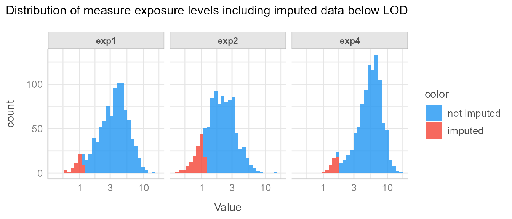
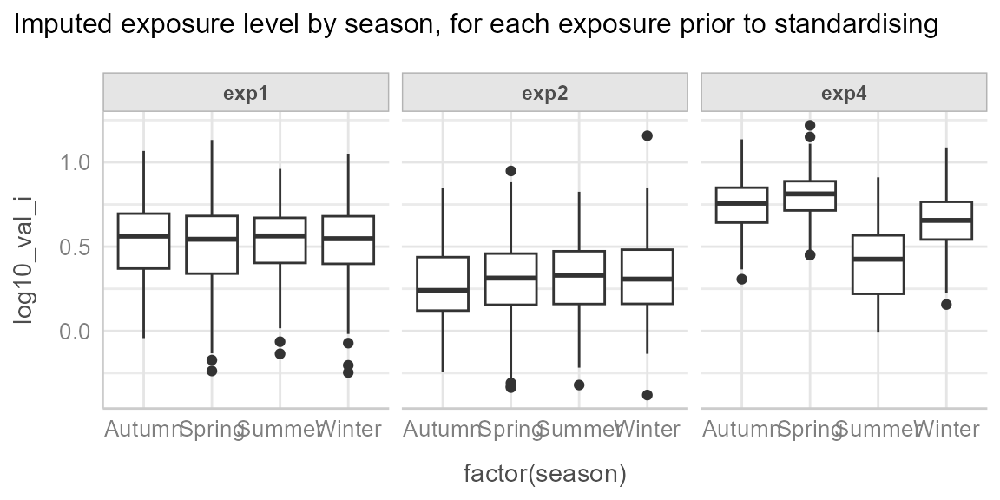
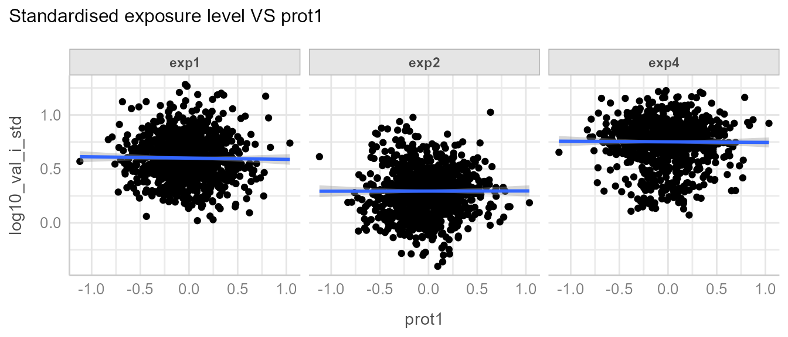

Introduction to preprocess
preprocess-intro.Rmd
# packages
library(dplyr)
library(ggplot2)
library(tidyr)
library(stringr)
library(readr)
library(tibble)
library(preprocess)Introduction
This vignette demonstrates the use of simulated datasets to
illustrate the application of the fill_in and
standardise functions for preprocessing environmental
exposure data.
⚠️ Important: The fill_in function
assumes that the variable to impute is normally distributed. It is the
user’s responsibility to apply the appropriate transformation (e.g.,
log-transformation) to ensure normality prior to using this function.
The same transformation must be applied to the Limit of Detection (LOD)
to ensure consistency.
Specifically, it covers how to:
- Handle values below the Limit of Detection (LOD) using the method proposed by Helsel (1990). This approach accommodates one or multiple exposure components, each with potentially different LODs.
- Standardize exposure data by adjusting for protocol variables selected from a list of candidates, while also accounting for additional covariates, following the method of Mortamais et al. (2012).
The Simulated Data
The datasets used in this example were designed to resemble real-world environmental exposure data. They simulate common scenarios where LOD handling and standardization are necessary.
The example data (dt_exp) consists of the following
variables:
- 4 lognormally distributed exposures
exp1,exp2,exp3andexp4, left censored (LOD), with missing data. Data below LOD is reported as “<LOD”. -
batch, batch effect which is TRUE forexp1andexp4 -
prot1continuous protocol variable associated withexp2 -
prot2continuous protocol variable associated with none of the exposures -
season, season effect which is TRUE forexp4, in addition to the batch effect -
cov1, additional covariate to be included in standardisation models
Examples of candidate protocol variables include: sample transportation time, sample defreeze time prior to measurement. Examples of additional covariates to be included in the standardisation model include: age or breastfeeding duration.
The data is in a wide format (one column per exposure), which is the usual format such data is provided by analytical laboratories.
head(dt_exp)
#> id batch exp1 exp2 exp3 prot1
#> 1 id8 1 1.22925099690535 2.88779888466437 <LOD -0.00954975
#> 2 id14 1 4.17231182471364 3.9394983990565 <LOD -0.38237917
#> 3 id16 1 3.55763803500625 1.75607103905869 0.561280432909913 -0.59325353
#> 4 id17 1 2.25789439366093 <LOD <LOD -0.19531902
#> 5 id22 1 6.92484889235359 1.46692222224359 0.853212096159328 -0.06349861
#> 6 id25 1 4.96218477666339 1.39213028969762 <LOD 0.36055996
#> prot2 season exp4 cov1
#> 1 31.35448 Autumn 3.22925099690535 -0.122238985
#> 2 47.39001 Summer 3.17231182471364 -0.042519367
#> 3 43.81518 Summer 2.55763803500625 0.005900652
#> 4 41.45147 Spring 5.25789439366093 0.330839677
#> 5 68.25540 Spring 9.92484889235359 0.034422787
#> 6 43.87650 Summer 3.96218477666339 0.241904949
head(dt_lod)
#> exp lod
#> 1 exp1 1.1
#> 2 exp2 1.1
#> 3 exp3 0.4
#> 4 exp4 1.7Prepare data
Data first needs to be converted to tidy format (one row per id and per compound, one column per variable) and LOD needs to be added in new column:
# convert exposure to long format and add lod
dt_exp_long <- dt_exp |>
pivot_longer(
cols = starts_with("exp"),
values_to = "val",
names_to = "exp"
) |>
left_join(dt_lod, by = "exp") |>
mutate(
val_num = ifelse(val == "<LOD", lod / 2, as.numeric(val))
)
head(dt_exp_long)
#> # A tibble: 6 × 10
#> id batch prot1 prot2 season cov1 exp val lod val_num
#> <chr> <int> <dbl> <dbl> <chr> <dbl> <chr> <chr> <dbl> <dbl>
#> 1 id8 1 -0.00955 31.4 Autumn -0.122 exp1 1.22925099690535 1.1 1.23
#> 2 id8 1 -0.00955 31.4 Autumn -0.122 exp2 2.88779888466437 1.1 2.89
#> 3 id8 1 -0.00955 31.4 Autumn -0.122 exp3 <LOD 0.4 0.2
#> 4 id8 1 -0.00955 31.4 Autumn -0.122 exp4 3.22925099690535 1.7 3.23
#> 5 id14 1 -0.382 47.4 Summer -0.0425 exp1 4.17231182471364 1.1 4.17
#> 6 id14 1 -0.382 47.4 Summer -0.0425 exp2 3.9394983990565 1.1 3.94Data description
It is important to describe data prior to pre-processing.
Detection rates and basic statistics:
| Exposure | % < LOD | p5 | Median | p95 |
|---|---|---|---|---|
| exp1 | 5% | <LOD | 3.55 | 7.39 |
| exp2 | 15% | <LOD | 2 | 4.58 |
| exp3 | 31% | <LOD | 0.5 | 1.16 |
| exp4 | 5% | 1.74 | 5.44 | 9.73 |
Exposure level distribution:
=> We observe different rates of data below LOD. Based on this,
exposures that are considered having too high rates of data < LOD
need to be excluded from the imputation-standardisation process. In this
example exp3 will be removed from any further processing
and will be categorised.
Step 1: Fill in data below LOD
The fill_in function is written to be used on tidy data
(one row per id and per exposure). It is important to specify the
.by argument of the mutate call in order to
separately impute data below LOD for each group. This is important
because this step requires computing exposure specific distribution
parameters, and LOD can also vary from one exposure to another. In this
simple example the only grouping variable is the exposure, but there
could be more groups on which we would like to apply the fill-in
procedure separately like exposure and sample period, in which
case the .by argument of the mutate call would
be modified to .by = c(exp, period).
Important: The fill_in function uses
the method of Helsel (1990), which assumes that the variable to be
imputed follows a normal distribution. In environmental
epidemiology, exposure variables are often log-normally distributed.
Therefore, the user must apply a log-transformation (or
another appropriate transformation) to the variable
before calling fill_in, and must
apply the same transformation to the LOD.
The function does not perform any transformation by itself and relies on the user to ensure distributional assumptions are met.
Fill in is done like this:
# Impute data below LOD
set.seed(113)
dt_imp <- dt_exp_long |>
filter(exp != "exp3") |>
mutate(
log10_val_i = fill_in(
var_to_fill = log10(val_num), # variable to be filled in, needs to be normal
lod = log10(lod) # variable containing LOD, needs to be same unit as variable to fill
),
.by = exp
)Important: set a seed prior to fill-in for reproducibility.
Then systematically visualise the imputations to make sure everything went as expected:

We see that imputed data is below LOD, and seem to have been drawn from the correct distribution.
Step 2: Standardise data on protocol variables
Next we want to standardise the filled-in values on protocol
variables batch, prot1 and prot2,
while taking into account the covariates season and
cov1.
We start by describing the data.
We can observe the batch effect for exp1 and
exp4:
And we can observe the effect of season for exp4:
ggplot(dt_imp, aes(x = factor(season), y = log10_val_i)) +
geom_boxplot() +
facet_wrap(~exp) +
see::theme_lucid() +
labs(
title = "Imputed exposure level by season, for each exposure prior to standardising"
)
And finally we observe an unequal distribution of season by batch:
This justifies the inclusion of season as a covariate in
the standardisation models, in order to differentiate the effect of
batch from the effect of season, because we
want to standardise for batch but not for
season.
We can also observe the association between exp2 and
prot1:
The goal of the standardisation process is to detect among all the
protocol variables (batch, prot1 and
prot2) which are associated with which exposure, and
standardise each exposures for the specific protocol to which it is
associated.
The first step of the standardisation process is to define potential protocol variables that might be associated with the variable to standardise and the extra covariates to be included in the model:
Then define which are the reference values for the categorical variables (e.g. if the reference value for batch is batch 2, all batches will be “aligned” with batch 2):
# set categorical variable reference values for categorical data
dt_imp <- dt_imp |>
mutate(
batch = relevel(factor(batch), ref = "2"),
season = relevel(factor(season), ref = "Spring")
)Reference value for continuous protocol variables is the median [@mortamais_correcting_2012].
Once the protocol variables and the covariates have been listed and the reference values have been set, we can apply the standardisation function:
# Standardise
dt_std <- dt_imp |>
mutate(
log10_val_i_std = standardise(
var_to_std = "log10_val_i", # variable to be standardised
protocol_vars = lst_prot_vars, # list of candidate protocol variables
covariates = lst_cov, # optional list of covariates, defaults to NULL
folder = "standardisation_outputs" # folder where outputs are saved
),
.by = exp # grouping variable
)It is crucial to look at the standardisation process outputs and the data posterior to the standardisation step to make sure what was done matches what was expected.
All outputs are saved in the folder defined in the path
argument.
If you want to inspect model diagnostics (linearity, residuals,
homoscedasticity, etc.), you can enable the optional argument
export_check_model = TRUE in the standardise()
function. This will save model diagnostic plots produced by
performance::check_model() in the same folder as the other
outputs. This can help verify that linear model assumptions hold for the
correction models.
We can first have a look at the associated protocol variables, that were used for the correction:
| protocol_vars | exp1 | exp2 | exp4 |
|---|---|---|---|
| batch | <2e-16 | 0.42 | <2e-16 |
| prot1 | 0.59 | 6.3e-16 | 0.91 |
| prot2 | 0.58 | 0.78 | 0.55 |
We see that the correct variables were detected.
We can see the correction for the batch effect of exp1
and exp4:
We can note that there is still residual variability between batches
for exp4, in our case this can be explained by the
season effect for which we have not adjusted.
And the correction of exp2 for prot1:

Note: The correction may not be so apparent, as realistic data likely possesses greater residual variability.